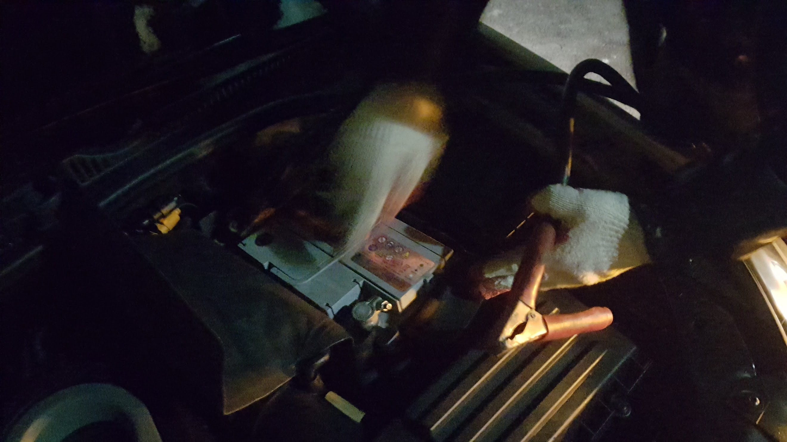
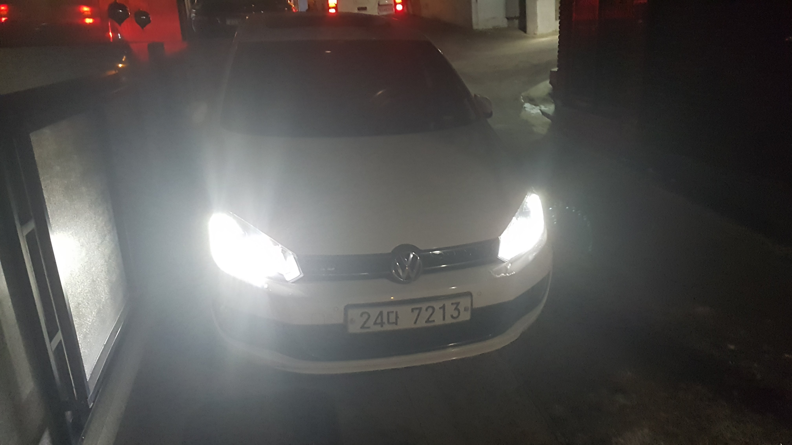
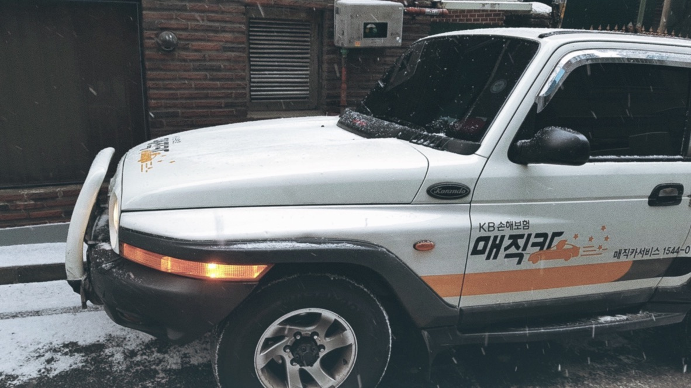
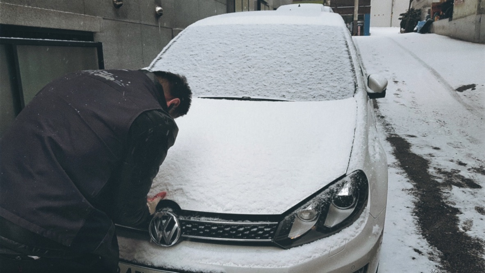
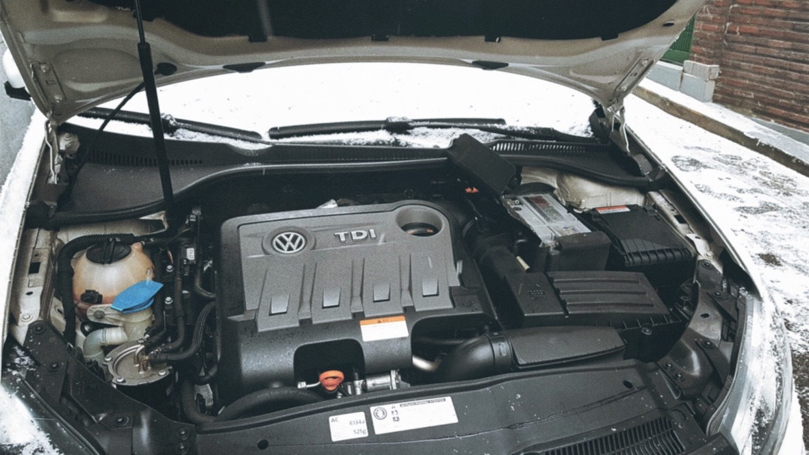

첫차 구입하고 3일째 되던 밤 잘 걸리던 시동이 갑자기 걸리지 않았다.
처음엔 ‘문제가 있는 차를 가져온건가?’ 싶은 생각에 좀 불안 했는데 검색해 보니 중고차 경우 오랜기간 운행 없이 정차되어 있어 배터리 수명이 다한 경우가 많다고 한다. 별 문제가 아니길 바라며 바로 보험사 출동 서비스를 불렀다.
겨울에 종종 이런 경우로 출동한다고 하시면서 능숙하게 점프를 해주셨다.

배터리 점프 중.

다행히 점프 후 별 문제없이 시동이 걸렸다.
다행히 점프 후 바로 시동이 걸렸다. 바로 시동을 끄면 또 안걸리 수 있으니 2시간 정도 시동을 걸어서 배터리를 어느정도 충전한 후 시동을 끄라고 하시면서 조만간 또 배터리가 방전될 수 있으니 그 때는 점검을 통해서 배터리 교체하는게 나을 것 같다고 조언도 해주셨다. (대부분 보험 계약에 무료 연간 출동 서비스 2~3회 정도 포함되어 있으니 필요한 경우 당황하지 말고 꼭 이용하자.)
2시간이 지나고 조마조마한 마음으로 시동을 껐다가 다시 걸었는데 다행히 잘 걸렸다.
하지만 바로 다음 날 저녁 또 배터리가 방전 되었다.😭
괜히 불안한 마음에 동호회에도 글을 남겼다. 별 얘기 아닌 것 같지만 다른 차주분들이 공유해 주시는 경험과 얘기가 큰 도움이 된다.
📝 겨울철 배터리 방전문제

또 다시 출동하신 기사님.

눈 오는 날 고생하시는 기사님, 다시 한 번 살려주세요. 🙏

이번에도 배터리 점프 후 시동이 잘 걸렸지만 조만간 배터리는 교체를 해야될 것 같다. 바우처가 남아 있어서 그나마 다행이지만 중고차는 구입 후 생각보다 돈이 많이 들어가는 것 같다. 혹시 중고차 고민중이신 분들은 이런 부분 고려해서 차를 선택하길 바란다.
참고로 중고 차량은 구매하면 엔진오일, 배터리, 특히 겨울철에 구매 했다면 배터리 교환은 필수라고 보면 될 것 같다. 그리고 배터리는 방전이 되면 점프를 해서 살려도 수명이 줄어드는데 AGM타입 배터리는 방전 손상으로 인한 수명 저하가 낮고 온도에 민감하지 않아 영하의 온도에서도 방전이 잘 되지 않는다고 한다. 흔히 ISG(stop and go)기능이 있는 차량에 많이 사용되는데 여러 장점이 있으니 배터리를 교체할 계획이 있다면 AGM배터리를 고려해 봐도 좋을 것 같다.
기록 끝.